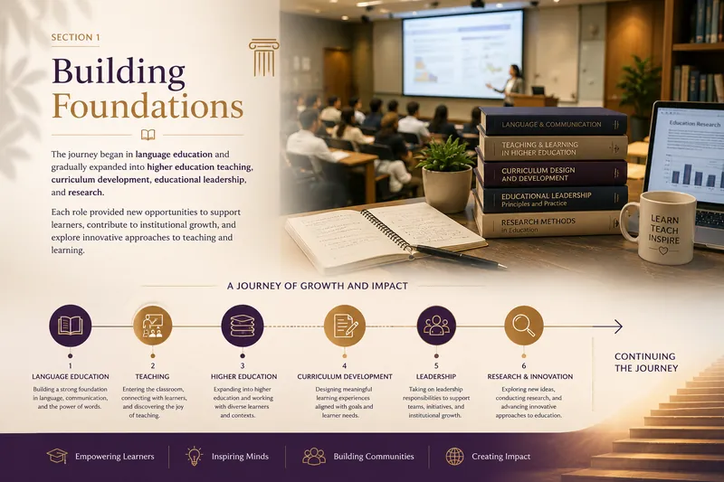

Building Foundations
The journey began in language education and gradually expanded into higher education teaching, curriculum development, educational leadership, and research. Each role provided new opportunities to support learners, contribute to institutional growth, and explore innovative approaches to teaching and learning.
Explore Building Foundations